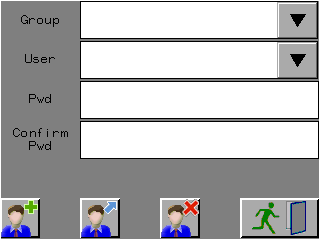
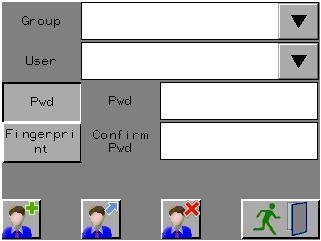

|
|
|
|
|
|
|
|
The User Manager Toolchest part enables users to add, delete, and modify security users at run time. There are two User Manager Toolchest parts:
User Manager - Standard size for most targets
User Manager Small - Designed for targets with a 200x80 panel size
The part has two different settings:
All - Users accessing this part can modify all users in all security groups.
Limited (Level Based) - Users accessing this part can only modify users in the security groups whose Security Level is less than that of the user currently logged into the target.
The part's security setting is controlled by the ModificationRights property. The Limited (Level Based) setting is only compatible for targets with Security Mode set to Level Based. If the target's Security Mode is set to Bitmask Based, the part's ModificationRights defaults to All. For more information on Level Based Security, see Defining Security Levels for Security Groups.

Make sure you put the User Manager Toolchest part onto a secured panel. Otherwise, all users will have access to this part.
 |
|||
Add |
Edit |
Delete |
Exit |
Add - Adds the new user to the security group.
Edit - Edits the user with the new password.
Delete - Deletes the selected user.
Exit - Returns the user to the previous panel.

If your security group is set to use fingerprints for authentication, the User Manager Toolchest will include the interface for fingerprint authentication at run time.
 |
Click the Toolchest icon  in the
menu bar to open the Toolchest window, and click the Security folder.
in the
menu bar to open the Toolchest window, and click the Security folder.
Move the UserManager part onto a panel using the drag and drop operation.
User Manager operations behave differently depending on the security mode selected in the User Manager's ModificationRights property.
ModificationRights = All - Users accessing this part can modify all users in all security groups.
ModificationRights = Limited (Level Based) - Users accessing this part can only modify users in the security groups whose Security Level is less than that of the user currently logged into the target. For more information on Level Based Security, see Defining Security Levels for Security Groups.
The following instructions describe how to use the User Manager to add a new user to a security group during run time.
Select the security group to add a user to from the Group drop-down list.
Enter the new user's name in the User field.
Enter in the new user's password into the password and confirm password fields.
Touch the Add button.
If ModificationRights is set to All, the user is added to the security group. If ModificationRights is set to Limited (Level Based), the user is added to the security group only if the security group's Security Level is less than the logged in user's Security Level.
The following instructions describe how to use the User Manager to delete a security user from a security group during run time.
Use the Group drop-down list and select the security group.
Select the user from the User drop-down list.
Touch the Delete Button.
If ModificationRights is set to All, the user is deleted. If ModificationRights is set to Limit (Level Based), the user is deleted only if the security group Security Level is less than the currently logged in user's Security Level.
When the user is deleted, all the previous password information will be removed from the user account.
The following instructions describe how to use the User Manager to change a user's password during run time.
User the Group drop-down list and select the security group.
Select the user from the User drop-down list.
Enter in the new password into the password and confirm password fields.
Touch the Edit button.
If ModificationRights is set to All, the user's password is changed. If ModificationRights is set to Limit (Level Based), the user's password is changed only if the selected security group Security Level is less than the currently logged in user's Security Level.

When using local security, you cannot delete a user that is currently logged in.
When using common security, you can delete the user that is currently logged in security client target but you cannot delete a user that is currently logged in security server target.
You cannot edit a user name or edit a security group name using the UserManager part.

When characters (usually double-byte characters) do not display properly in the User Manager toolchest part, from the Property Inspector check its Group Text and PwdText properties. The language and font for those properties should match the language and font of the Initial User Language (from the Navigator window's Project tab, see the Environment node properties).